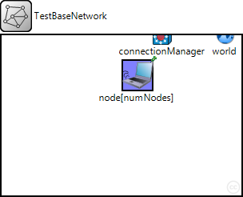
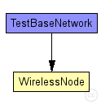
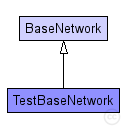

This documentation is released under the Creative Commons license
This documentation is released under the Creative Commons licenseThis example shows the basic structure of an network using MiXiM.
The network consists of three hosts which use the CSMAMacLayer as MAC layer, "SimplePathlossModel" as only AnalogueModel and a SNRThresholdDecider as Decider.
The used Network- and Application layer can be defined in the omnetpp.ini. As default the BaseNetwLayer and BurstApplLayer are used.
You can use this network as an template for you own simulation.
The following diagram shows usage relationships between types. Unresolved types are missing from the diagram. Click here to see the full picture.
The following diagram shows inheritance relationships for this type. Unresolved types are missing from the diagram. Click here to see the full picture.
| Name | Type | Description |
|---|---|---|
| BaseNetwork | network | (no description) |
| Name | Type | Default value | Description |
|---|---|---|---|
| playgroundSizeX | double |
x size of the area the nodes are in (in meters) |
|
| playgroundSizeY | double |
y size of the area the nodes are in (in meters) |
|
| playgroundSizeZ | double |
z size of the area the nodes are in (in meters) |
|
| cmType | string | "org.mixim.base.connectionManager.ConnectionManager" |
connection manager to use |
| wuType | string | "org.mixim.base.modules.BaseWorldUtility" |
world utility to use |
| numNodes | int |
total number of hosts in the network |
| Name | Value | Description |
|---|---|---|
| isNetwork | ||
| display | bgb=$playgroundSizeX,$playgroundSizeY,white;bgp=0,0 |
| Name | Type | Default value | Description |
|---|---|---|---|
| connectionManager.coreDebug | bool |
debug switch for core framework |
|
| connectionManager.sendDirect | bool |
send directly to the node or create separate gates for every connection |
|
| connectionManager.pMax | double |
maximum sending power used for this network [mW] |
|
| connectionManager.sat | double |
minimum signal attenuation threshold [dBm] |
|
| connectionManager.alpha | double |
minimum path loss coefficient |
|
| connectionManager.carrierFrequency | double |
minimum carrier frequency of the channel [Hz] |
|
| world.useTorus | bool |
use the playground as torus? |
|
| node.netwl.stats | bool |
stats switch |
|
| node.netwl.headerLength | int |
length of the network packet header (in bits) |
|
| node.tranl.stats | bool |
stats switch |
|
| node.tranl.headerLength | int |
length of the network packet header (in bits) |
|
| node.sessl.stats | bool |
stats switch |
|
| node.sessl.headerLength | int |
length of the network packet header (in bits) |
|
| node.presl.stats | bool |
stats switch |
|
| node.presl.headerLength | int |
length of the network packet header (in bits) |
|
| node.appl.headerLength | int |
length of the application message header (in bits) |
// //This example shows the basic structure of an network using MiXiM. // //The network consists of three hosts which use the CSMAMacLayer as MAC layer, //"SimplePathlossModel" as only AnalogueModel and a SNRThresholdDecider as Decider. // //The used Network- and Application layer can be defined in the omnetpp.ini. As default //the BaseNetwLayer and BurstApplLayer are used. // //You can use this network as an template for you own simulation. // network TestBaseNetwork extends BaseNetwork { parameters: int numNodes; // total number of hosts in the network submodules: node[numNodes]: WirelessNode { parameters: @display("p=170,50;i=device/wifilaptop"); nicType = default("NicCSMA"); } }
This documentation is released under the Creative Commons license